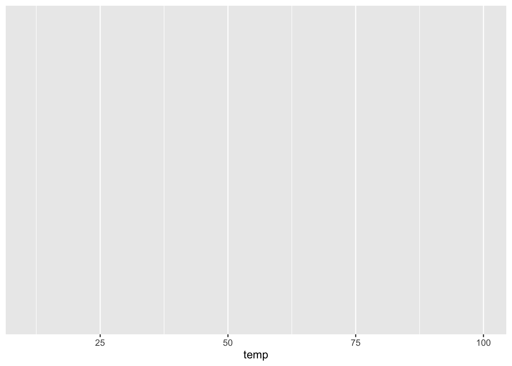
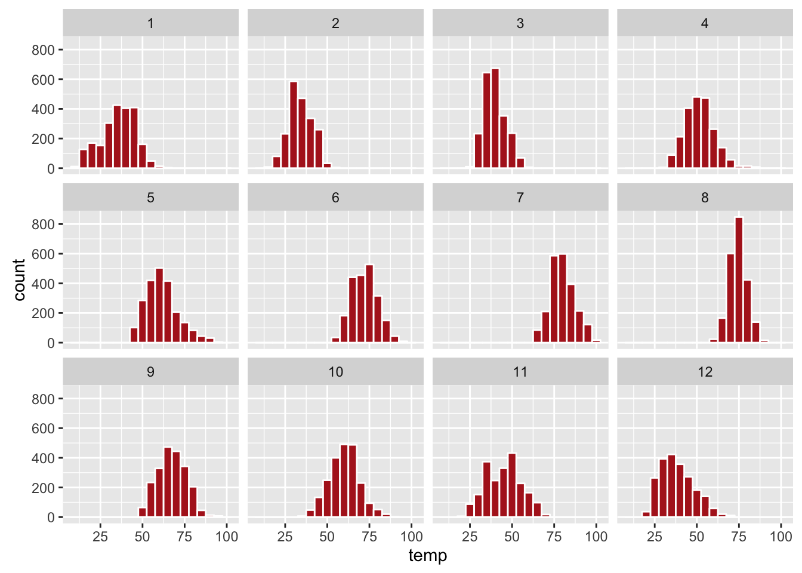
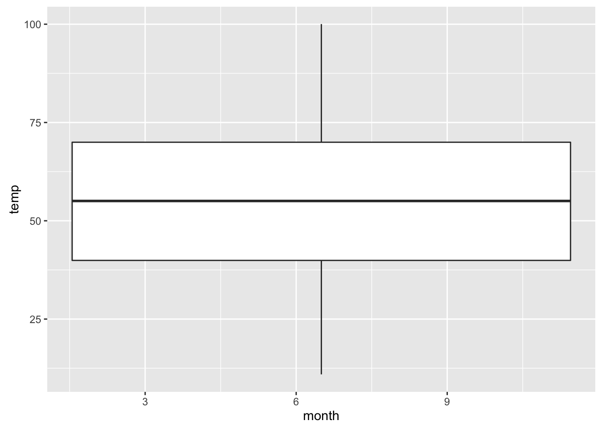
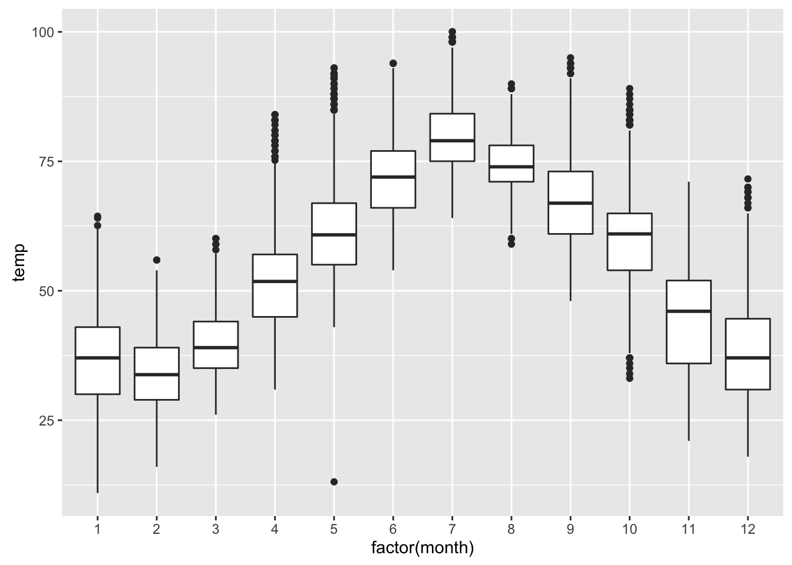
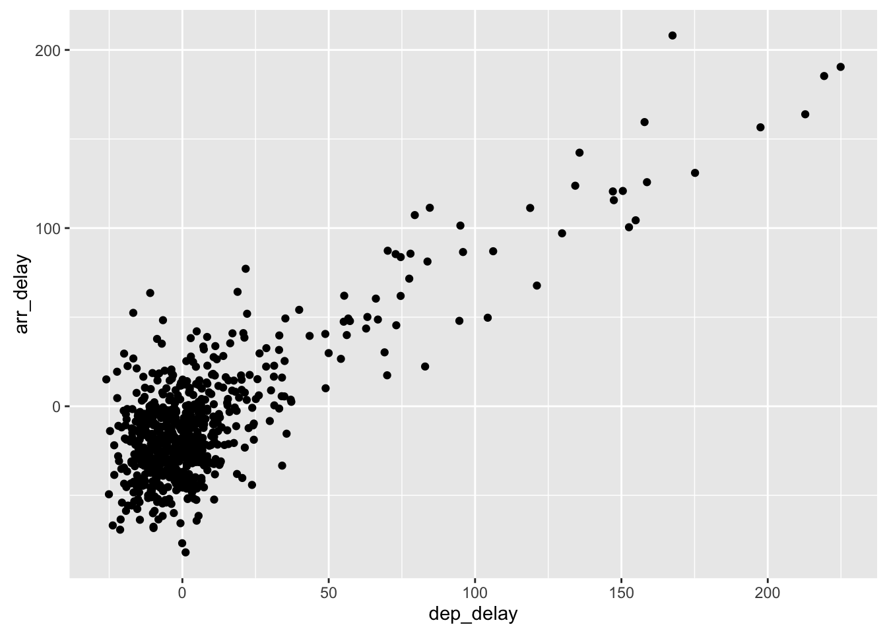

4 Visualizing Data
In Chapter 3, we discussed the importance of datasets being tidy. You will see in examples here why having a tidy dataset helps us immensely with plotting our data. We will focus on using Hadley’s ggplot2 package in doing so, which was developed to work specifically on datasets that are tidy. It provides an easy way to customize your plots and is based on data visualization theory given in The Grammar of Graphics (Wilkinson 2005).
Graphics provide a nice way for us to get a sense for how quantitative variables compare in terms of their center and their spread. It also helps us to identify patterns and outliers in our data. We will see that a common extension of these ideas is to compare the distribution (i.e., what the spread of a variable looks like) as we go across the levels of a different categorical variable.
4.1 Five Named Graphs - The FNG
For our purposes here, we will be working with five different types of graphs. (Note that we will use a lot of different words here in regards to plotting - “graphs”, “plots”, and “charts” are all ways to discuss a resulting graphic. You can think of them as all being synonyms.) These five plots are:
- histograms
- boxplots
- barplots
- scatter-plots
- line-graphs
With this toolbox of plots, you can visualize just about any type of variable thrown at you. We will discuss some other variations of these but with the FNG in your repertoire you can do big things! Something we will also stress here is that certain plots only work for categorical/logical variables and others only for quantitative variables. You’ll want to quiz yourself often on which plot makes sense with a given problem set-up.
We now introduce another dataframe in the nycflights13 package introduced in Chapter 3.
library(nycflights13)
data(weather)4.2 Histograms
Our focus now turns to the temp variable in this weather dataset. We would like to visualize what the 26130 temperatures look like. Looking over the weather dataset1 and running ?weather, we can see that the temp variable corresponds to hourly temperature (in Fahrenheit) recordings at weather stations near airports in New York City. We could just produce points where each of the different values appears on something similar to a number line:
Figure 4.1: Strip Plot of Hourly Temperature Recordings from NYC in 2013
This gives us a general idea of how the values of temp differ. We see that temperatures vary from around 11 up to 100 degrees Fahrenheit. The area between 40 and 60 degrees appears to have more points plotted than outside that range.
What is commonly produced instead of this strip plot is a plot known as a histogram. The histogram show how many elements of the variable fall in specified bins. These bins may correspond to between 0-10°F, 10-20°F, etc.
To produce a histogram, we introduce the Hadley’s ggplot2 package (Wickham and Chang 2016). We will use the ggplot function which expects at a bare minimal as arguments
- the dataframe where the variables exist and
- the names of the variables to be plotted.
The names of the variables will be entered into the aes function as arguments where aes stands for “aesthetics”.
ggplot(data = weather, mapping = aes(x = temp))
The plot given above is not a histogram, but the output does show us a bit of what is going on with ggplot(data = weather, mapping = aes(x = temp)). It is producing a backdrop onto which we will “paint” elements.
We next proceed by adding a layer—hence, the use of the + symbol—to the plot to produce a histogram. (Note also here that we don’t have to specify the data = and mapping = text in our function calls. This is covered in more detail in Appendix A - Chapter 7.)
ggplot(data = weather, mapping = aes(x = temp)) +
geom_histogram()## `stat_bin()` using `bins = 30`. Pick better value with `binwidth`.## Warning: Removed 1 rows containing non-finite values (stat_bin).
Figure 4.2: Histogram of Hourly Temperature Recordings from NYC in 2013
We have the power to specify how many bins we would like to put the data into as an argument in the geom_histogram function. By default, this is chosen to be 30 somewhat arbitrarily and we have received a warning above our plot that this was done. We also notice here that another warning about 1 missing value is given. This value is omitted from the plot. This warning is ignored for future customizations of the plot. (Discuss missing values here?)
ggplot(data = weather, mapping = aes(x = temp)) +
geom_histogram(bins = 60)Figure 4.3: Histogram of Hourly Temperature Recordings from NYC in 2013 - 60 Bins
We can tweak the plot a little more by specifying the width of the bins (instead of how many bins to divide the variable into) by using the binwidth argument in the geom_histogram function. We can also add some color to the plot by invoking the fill and color arguments. A listing of all of the built-in colors to R by name and color is available here.
ggplot(data = weather, mapping = aes(x = temp)) +
geom_histogram(binwidth = 10, color = "white", fill = "forestgreen")
Figure 4.4: Histogram of Hourly Temperature Recordings from NYC in 2013 - Binwidth = 10
Learning check
(LC4.1) What does changing the number of bins from 30 to 60 tell us about the distribution of temperatures?
(LC4.2) Would you classify the distribution of temperatures as symmetric or skewed?
(LC4.3) What would you guess is the “center” value in this distribution? Why did you make that choice?
(LC4.4) Is this data spread out greatly from the center or is it close? Why?
4.2.1 Continuous data summaries
The temp variable is a continuous quantitative variable (frequently just called a continuous variable). “A variable is continuous if you can arrange its values in order and an infinite number of unique values can exist between any two values of the variable”(Wickham and Grolemund 2016). Some common examples of continuous variables are time and height. Between any two times there are an infinitely many number of time units that fall between them.
It is often easier to think about quantitative variables that are not continuous to help us better understand continuity. The best example is counts. If we are looking to count the number of flights that depart on a given day from New York City, this variable would not be continuous. It falls on a discrete scale.
We can examine some summary information about this temp variable. To do so, we introduce the summary function. (We will see in Chapter 5 how to use the summarize function in the dplyr package to produce similar results.)
The syntax here is a little different than what we have seen before. (A further discussion about R syntax is available in Appendix A - Chapter 7). Here, summary is the function and it is expecting an object to be summarized as its argument. The object here is the temp variable in the weather dataframe. To focus on just this one variable temp in weather, we separate them by the dollar sign symbol $. Order matters here: the dataframe comes before the $ and the variable/column name comes after.
summary(weather$temp)## Min. 1st Qu. Median Mean 3rd Qu. Max. NA's
## 10.94 39.92 55.04 55.20 69.98 100.00 1This tells us what is known as the five-number summary for our variable as well as the mean value of the variable. More information on both of these concepts is given in Appendix A - Chapter 7.
This summary gives us some numerical summaries of our temperature variable. The minimum recorded temperature is 10.94 degrees Fahrenheit and the maximum is 100.04 degrees Fahrenheit. We have one missing value denoted as an NA in the observations of this variable. The median Fahrenheit temperature of 55.04 and mean of 55.2035149 are quite close. This is a property of symmetric distributions.
The last two entries given by summary correspond to the 25th percentile and the 75th percentile. If we sorted all of the temperatures in increasing order, we would see that 25% of them would fall below 39.92 and that 75% of them would fall below 69.98. This implies that the middle 50% of data values lie between 39.92 and 69.98 degrees Fahrenheit.
Introduce standard deviation here?
4.2.2 Summary
Histograms provide a useful way of looking at how ONE continuous variable varies. They allow us to answer questions such as
- Are there values far away from the center? These are commonly called outliers and can frequently be easily identified on a histogram.
- Are most values close to the center? If so, the spread of the variable is small. If not, the spread is large.
- How spread out are the values? One measure of this spread is standard deviation discussed above.
The histogram show how many entries fall in different groupings of this variable. Another common property of distributions is symmetry and as we saw it is quite easily identified by looking over the histogram produced from the variable’s values.
4.3 Boxplots
Histograms can also be produced to compare the distribution of a variable over another variable. Suppose we were interested in looking at how the temperature recordings we saw in the last section varied by month. This is what is meant by “the distribution of a variable over another variable”: temp is one variable and month is the other variable.
4.3.1 Faceting
In order to look at histograms of temp for each month, we introduce a new concept called facetting. Faceting is used when we’d like to create small multiples of the same plot over a different categorical variable. By default, all of the small multiples will have the same vertical axis. An example will help here. We will discuss the concept of faceting in further detail in Section 4.4.
ggplot(data = weather, mapping = aes(x = temp)) +
geom_histogram(binwidth = 5, color = "white", fill = "firebrick") +
facet_wrap(~month)
As we might expect, the temperature tends to increase as summer approaches and then decrease as winter approaches.
Learning check
(LC4.5) What other things do you notice about the faceted plot above? How does a faceted plot help us see how relationships between two variables?
(LC4.6) What do the numbers 1-12 correspond to in the plot above? What about 25, 50, 75, 100?
(LC4.7) What could be done to make the faceted plot above more readable? (Focus on tweaking the histograms and not on making a different type of plot here.)
(LC4.8) For which types of datasets would these types of faceted plots not work well in comparing relationships between variables? Draw or give an example.
Histograms can provide a way to compare distributions across groups as we see above when we looked at temperature over months. Frequently, a plot called a boxplot (also called a side-by-side boxplot) is done instead. The boxplot uses the information provided in the five-number summary referred to in the previous section when we used the summary function. It gives a way to compare this summary information across the different levels of a group. Let’s create a boxplot to compare the monthly temperatures as we did above with the faceted histograms.
ggplot(data = weather, mapping = aes(x = month, y = temp)) +
geom_boxplot()## Warning: Continuous x aesthetic -- did you forget aes(group=...)?## Warning: Removed 1 rows containing non-finite values (stat_boxplot).
Note the first warning that is given here. (The second one corresponds to missing values in the dataframe and it is turned off on subsequent plots.) This plot does not look like what we were expecting. We were expecting to see the distribution of temperatures for each month (so 12 different boxplots). This gives us the overall boxplot without any other groupings. We can get around this by introducing a new function for our x variable.
ggplot(data = weather, mapping = aes(x = factor(month), y = temp)) +
geom_boxplot()
We have introduced a new function called factor() here. One of the things this function does is to convert a numeric value like month (1, 2, …, 12) into a categorical variable. The “box” part of this plot represents the 25th percentile, the median (50th percentile), and the 75th percentile. The dots correspond to outliers. (The specific formulation for these outliers is discussed in Appendix A - Chapter 7.) The lines show how the data varies that is not in the center 50% defined by the first and third quantiles. Longer lines correspond to more variability and shorter lines correspond to less variability.
Learning check
(LC4.9) What does the dot at the bottom of the plot for May correspond to? Explain what might have occurred in May to produce this point.
(LC4.10) Which months have the highest variability in temperature? What reasons do you think this is?
(LC4.11) We looked at the distribution of a continuous variable over a categorical variable here with this boxplot. Why can’t we look at the distribution of one continuous variable over the distribution of another continuous variable? Say temperature across pressure, for example?
(LC4.12) Boxplots provide a simple way to identify outliers. Why may outliers be easier to identify when looking at a boxplot instead of a faceted histogram?
4.3.2 Summary
Boxplots provide a way to compare and contrast the distribution of ONE quantitative variable across multiple levels of ONE categorical variable. One can easily look to see where the median falls across the different groups by looking at the center line in the box. You can also see how spread out the variable is across the different groups by looking at the width of the box and also how far out the lines stretch from the box. Lastly, outliers are even more easily identified when looking at a boxplot than when looking at a histogram.
4.4 Barplots
Both histograms and boxplots represent ways to visualize the variability of continuous variables. Another common task is to present the distribution of a categorical variable. This is a simpler task since we will be interested in how many elements from our data fall into the different categories of the categorical variable. We need not bin the data or identify the different quantiles for categorical variables.
Frequently, the best way to visualize these different counts (also known as frequencies) is via a barplot. Consider the distribution of airlines that flew out of New York City in 2013. This can be plotted by invoking the geom_bar function in ggplot2:
ggplot(data = flights, mapping = aes(x = carrier)) +
geom_bar()Figure 4.5: Number of flights departing NYC in 2013 by airline
Recall the airlines dataset discussed in Chapter 3.
library(knitr)
data(airlines)
kable(airlines)| carrier | name |
|---|---|
| 9E | Endeavor Air Inc. |
| AA | American Airlines Inc. |
| AS | Alaska Airlines Inc. |
| B6 | JetBlue Airways |
| DL | Delta Air Lines Inc. |
| EV | ExpressJet Airlines Inc. |
| F9 | Frontier Airlines Inc. |
| FL | AirTran Airways Corporation |
| HA | Hawaiian Airlines Inc. |
| MQ | Envoy Air |
| OO | SkyWest Airlines Inc. |
| UA | United Air Lines Inc. |
| US | US Airways Inc. |
| VX | Virgin America |
| WN | Southwest Airlines Co. |
| YV | Mesa Airlines Inc. |
We see that United Air Lines, JetBlue Airways, and ExpressJet Airlines had the most flights depart New York City in 2013. To get the actual number of flights by each airline we can use the table function on the carrier variable in flights:
flights_table <- table(flights$carrier)
flights_table##
## 9E AA AS B6 DL EV F9 FL HA MQ OO UA
## 18460 32729 714 54635 48110 54173 685 3260 342 26397 32 58665
## US VX WN YV
## 20536 5162 12275 601More information on the use of this $ syntax is available in Chapter 3 and in Appendix A - Chapter 7.
Learning check
(LC4.13) Why are histograms inappropriate for visualizing categorical variables?
(LC4.14) What is the difference between histograms and barplots?
(LC4.15) How many Envoy Air flights departed NYC in 2013?
(LC4.16) What was the seventh highest airline in terms of departed flights from NYC in 2013?
4.4.1 Must avoid pie charts!
Unfortunately, one of the most common plots seen today for categorical data is the pie chart. While they may see harmless enough, they actually present a problem in that humans are unable to judge angles well. As Naomi Robbins describes in her book “Creating More Effective Graphs”, we overestimate angles greater than 90 degrees and we underestimate angles less than 90 degrees. In other words, it is difficult for us to determine relative size of one piece of the pie compared to another.
Let’s examine our previous barplot example on the number of flights departing NYC by airline. This time we will use a pie chart. As you review this chart, try to identify
- how much larger the portion of the pie is for ExpressJet Airlines (
EV) compared to US Airways (US), - what the third largest carrier is in terms of departing flights, and
- how many carriers have fewer flights than United Airlines (
UA)?

While it is quite easy to look back at the barplot to get the answer to these questions, it’s quite difficult to get the answers correct when looking at the pie graph. Barplots can always present the information in a way that is easier for the eye to determine relative position. There may be one exception from Nathan Yau at FlowingData.com but we will leave this for the reader to decide:

Learning check
(LC4.17) Why should pie charts be avoided and replaced by barplots?
(LC4.18) What is your opinion as to why pie charts continue to be used?
4.4.2 Using barplots to compare two variables
Barplots are the go-to way to visualize the frequency of different categories of a categorical variable. They make it easy to order the counts and to compare one group’s frequency to another. Another use of barplots (unfortunately, sometimes inappropriately and confusingly) is to compare two categorical variables together. Let’s examine the distribution of outgoing flights from NYC by carrier and airport.
We begin by getting the names of the airports in NYC that were included in the flights dataset. Remember from Chapter 3 that this can be done by using the inner_join function in the dplyr package.
library(dplyr)
flights_namedports <- inner_join(flights, airports, by = c("origin" = "faa"))
str(flights_namedports)## Classes 'tbl_df', 'tbl' and 'data.frame': 336776 obs. of 25 variables:
## $ year : int 2013 2013 2013 2013 2013 2013 2013 2013 2013 2013 ...
## $ month : int 1 1 1 1 1 1 1 1 1 1 ...
## $ day : int 1 1 1 1 1 1 1 1 1 1 ...
## $ dep_time : int 517 533 542 544 554 554 555 557 557 558 ...
## $ sched_dep_time: int 515 529 540 545 600 558 600 600 600 600 ...
## $ dep_delay : num 2 4 2 -1 -6 -4 -5 -3 -3 -2 ...
## $ arr_time : int 830 850 923 1004 812 740 913 709 838 753 ...
## $ sched_arr_time: int 819 830 850 1022 837 728 854 723 846 745 ...
## $ arr_delay : num 11 20 33 -18 -25 12 19 -14 -8 8 ...
## $ carrier : chr "UA" "UA" "AA" "B6" ...
## $ flight : int 1545 1714 1141 725 461 1696 507 5708 79 301 ...
## $ tailnum : chr "N14228" "N24211" "N619AA" "N804JB" ...
## $ origin : chr "EWR" "LGA" "JFK" "JFK" ...
## $ dest : chr "IAH" "IAH" "MIA" "BQN" ...
## $ air_time : num 227 227 160 183 116 150 158 53 140 138 ...
## $ distance : num 1400 1416 1089 1576 762 ...
## $ hour : num 5 5 5 5 6 5 6 6 6 6 ...
## $ minute : num 15 29 40 45 0 58 0 0 0 0 ...
## $ time_hour : POSIXct, format: "2013-01-01 05:00:00" ...
## $ name : chr "Newark Liberty Intl" "La Guardia" "John F Kennedy Intl" "John F Kennedy Intl" ...
## $ lat : num 40.7 40.8 40.6 40.6 40.8 ...
## $ lon : num -74.2 -73.9 -73.8 -73.8 -73.9 ...
## $ alt : int 18 22 13 13 22 18 18 22 13 22 ...
## $ tz : num -5 -5 -5 -5 -5 -5 -5 -5 -5 -5 ...
## $ dst : chr "A" "A" "A" "A" ...We see that name now corresponds to the name of the airport as referenced by the origin variable. We will now plot carrier as the horizontal variable. When we specify geom_bar, it will specify count as being the vertical variable. A new addition here is fill = name. Look over what was produced from the plot to get an idea of what this argument gives.
ggplot(data = flights_namedports, mapping = aes(x = carrier, fill = name)) +
geom_bar()Figure 4.6: Stacked barplot comparing the number of flights by carrier and airport
This plot is what is known as a stacked barplot. While simple to make, it often leads to many problems.
Learning check
(LC4.19) What kinds of questions are not easily answered by looking at the above figure?
(LC4.20) What can you say, if anything, about the relationship between airline and airport in NYC in 2013 in regards to the number of departing flights?
Another variation on the stacked barplot is the side-by-side barplot.
ggplot(data = flights_namedports, mapping = aes(x = carrier, fill = name)) +
geom_bar(position = "dodge")Figure 4.7: Side-by-side barplot comparing the number of flights by carrier and airport
Learning check
(LC4.21) Why might the side-by-side barplot be preferable to a stacked barplot in this case?
(LC4.22) What are the disadvantages of using a side-by-side barplot, in general?
Lastly, an often preferred type of barplot is the faceted barplot. We already saw this concept of faceting and small multiples in Subsection 4.3.1. This gives us a nicer way to compare the distributions across both carrier and airport/name.
ggplot(data = flights_namedports, mapping = aes(x = carrier, fill = name)) +
geom_bar() +
facet_grid(name ~ .)Figure 4.8: Faceted barplot comparing the number of flights by carrier and airport
Note how the facet_grid function arguments are written here. We are wanting the names of the airports vertically and the carrier listed horizontally. As you may have guessed, this argument and other formulas of this sort in R are in y ~ x order. We will see more examples of this in Chapter 6.
Learning check
(LC4.23) Why is the faceted barplot preferred to the side-by-side and stacked barplots in this case?
(LC4.24) What information about the different carriers at different airports is more easily seen in the faceted barplot?
4.4.3 Summary
Barplots are the preferred way of displaying categorical variables. They are easy-to-understand and to make comparisons across groups of a categorical variable. When dealing with more than one categorical variable, faceted barplots are frequently preferred over side-by-side or stacked barplots. Stacked barplots are sometimes nice to look at, but it is quite difficult to compare across the levels since the sizes of the bars are all of different sizes. Side-by-side barplots can provide an improvement on this, but the issue about comparing across groups still must be dealt with.
4.5 Scatter-plots
We have seen that boxplots are most appropriate when plotting the distribution of ONE continuous variable across different levels/groups of ONE categorical variable. Barplots (preferably the faceted type) are best when looking at the distribution of ONE categorical variable across different levels of another categorical variable. But what if we are looking to investigate the relationship between TWO continuous variables? What is commonly produced is the well-known scatter-plot, which shows the points corresponding to the values of each of the variables scattered around.
We will now investigate arrival delays (the vertical “y” axis variable) versus departure delays (the horizontal “x” axis variable) for Alaska Airlines flights leaving NYC in 2013. Notice the new function that is invoked here: filter, which resides in the dplyr package. You will see many more examples using this function in Chapter 5. The filter function goes through the dataframe specified (flights here) and selects only those rows which meet the condition given (carrier == "AS" here).
alaska_flights <- filter(flights, carrier == "AS")
ggplot(alaska_flights, aes(x = dep_delay, y = arr_delay)) +
geom_point()Figure 4.9: Arrival Delays vs Departure Delays for Alaska Airlines flights from NYC in 2013
We see that a positive relationship exists between dep_delay and arr_delay: as departure delays increase, arrival delays tend to also increase. We also note that the majority of points fall near the point (0, 0) here. There is a large mass of points clustered there.
Learning check
(LC4.25) What are some practical reasons why dep_delay and arr_delay have a positive relationship?
(LC4.26) What variables (not necessarily in the flights dataframe) would you expect to have a negative correlation (i.e. a negative relationship) with dep_delay? Why? Remember that we are focusing on continuous variables here.
(LC4.27) Why do you believe there is a cluster of points near (0, 0)?
- What does (0, 0) correspond to in terms of the Alaskan flights?
(LC4.28) What are some other features of the plot that stand out to you?
4.5.1 Jittering
The large mass of points near (0, 0) can cause some confusion. This is the result of a phenomenon called over-plotting. As one may guess, this corresponds to values being plotted on top of each other over and over again. It is often difficult to know just how many values are plotted in this way when looking at a basic scatter-plot as we have here.
One way of relieving this issue of over-plotting is to jitter the points a bit. In other words, we are going to add just a bit of random noise to the points to better see them and remove some of the over-plotting. You can think of “jittering” as shaking the points a bit on the plot. Instead of using geom_point, we use geom_jitter to perform this shaking and specify around how much jitter to add with the width and height arguments. This corresponds to how hard you’d like to shake the plot in units corresponding to those for both the horizontal and vertical variables (minutes here).
ggplot(alaska_flights, aes(x = dep_delay, y = arr_delay)) +
geom_jitter(width = 30, height = 30)
This has helps us a little bit in getting a sense for the over-plotting, but with a relatively large dataset like this one (714 flights), it is often useful to change the transparency of the points as seen in the next section.
4.5.2 Setting transparency
One of the arguments that can be changed with geom_point is alpha. By default, this value is set to 1. We can change this value to a smaller fraction to change the transparency of the points in the plot:
ggplot(alaska_flights, aes(x = dep_delay, y = arr_delay)) +
geom_point(alpha = 0.2)Figure 4.10: Arrival Delays vs Departure Delays for Alaska Airlines flights from NYC in 2013 - alpha=0.2
We can also specify the alpha argument in geom_jitter:
ggplot(alaska_flights, aes(x = dep_delay, y = arr_delay)) +
geom_jitter(width = 30, height = 30, alpha = 0.3)Figure 4.11: Arrival Delays vs Departure Delays for Alaska Airlines flights from NYC in 2013 - jitter and alpha added
Learning check
(LC4.29) Why is setting the alpha argument value useful with scatter-plots?
- What further information does it give you that a regular scatter-plot cannot?
(LC4.30) After viewing the 4.10 above, give a range of arrival times and departure times that occur most frequently?
- How has that region changed compared to when you observed the same plot without the
alpha = 0.2set in 4.9?
Maybe include a shading of the points by another variable example here for multivariate thinking?
4.5.3 Summary
Scatter-plots may be the most used plot today and they can provide an immediate way to see the trend in one variable versus another. Remember that they only make sense when plotting a continuous variable versus a continuous variable though. If you try to create a scatter-plot where either one of the two variables is not quantitative, you will get strange results. Be careful!
With medium to large datasets, you may need to tweak arguments in both geom_jitter and the alpha parameter in order to get a good feel for relationships in your data. This tweaking is often a fun part of data visualization since you’ll have the chance to see different relationships come about as you make subtle changes to your plots.
4.6 Line-graphs
The last of the FNG is a line-graph. They are most frequently used when the horizontal axis is time. Time represents a variable that is connected together by each day following the previous day. In other words, time has a natural ordering. Line-graphs should be avoided when there is not a clear ordering to the explanatory (“x” variable).
We are interested in exploring the arrival delays by day throughout the year of 2013 from outgoing flights from New York City. If we plotted all of these values, we obtain the following scatter-plot:
ggplot(flights, aes(x = time_hour, y = arr_delay)) +
geom_point()
We see that this plot is difficult to understand based on the sheer number of points plotted. We see some outlier points with more than 500 minutes of arrival delay, but even some jittering and transparency is not going to help us here.
Instead of plotting all of the values for each hour for all flights, it might make sense to plot the average value for each day in terms of arrival delays. Of course, we also need to address which average we should use: mean or median. With there being some outliers here, we have chosen to use the median arrival delay (since the mean is heavily influence by outliers).
You may think that this is a difficult task but the group_by and summarize functions make this a breeze. You’ll see more examples using these two functions in Chapter 5. Here we will create a new variable, which corresponds to the month and day combined, from the time_hour column using the mutate function and create a new dataframe called flights_day. We also give the str of this new dataset so you can see the new variable added date:
flights_day <- mutate(flights, date = as.Date(time_hour))
str(flights_day)## Classes 'tbl_df', 'tbl' and 'data.frame': 336776 obs. of 20 variables:
## $ year : int 2013 2013 2013 2013 2013 2013 2013 2013 2013 2013 ...
## $ month : int 1 1 1 1 1 1 1 1 1 1 ...
## $ day : int 1 1 1 1 1 1 1 1 1 1 ...
## $ dep_time : int 517 533 542 544 554 554 555 557 557 558 ...
## $ sched_dep_time: int 515 529 540 545 600 558 600 600 600 600 ...
## $ dep_delay : num 2 4 2 -1 -6 -4 -5 -3 -3 -2 ...
## $ arr_time : int 830 850 923 1004 812 740 913 709 838 753 ...
## $ sched_arr_time: int 819 830 850 1022 837 728 854 723 846 745 ...
## $ arr_delay : num 11 20 33 -18 -25 12 19 -14 -8 8 ...
## $ carrier : chr "UA" "UA" "AA" "B6" ...
## $ flight : int 1545 1714 1141 725 461 1696 507 5708 79 301 ...
## $ tailnum : chr "N14228" "N24211" "N619AA" "N804JB" ...
## $ origin : chr "EWR" "LGA" "JFK" "JFK" ...
## $ dest : chr "IAH" "IAH" "MIA" "BQN" ...
## $ air_time : num 227 227 160 183 116 150 158 53 140 138 ...
## $ distance : num 1400 1416 1089 1576 762 ...
## $ hour : num 5 5 5 5 6 5 6 6 6 6 ...
## $ minute : num 15 29 40 45 0 58 0 0 0 0 ...
## $ time_hour : POSIXct, format: "2013-01-01 05:00:00" ...
## $ date : Date, format: "2013-01-01" ...flights_summarized <- flights_day %>% group_by(date) %>%
summarize(median_arr_delay = median(arr_delay, na.rm = TRUE))
head(flights_summarized)## # A tibble: 6 x 2
## date median_arr_delay
## <date> <dbl>
## 1 2013-01-01 3
## 2 2013-01-02 4
## 3 2013-01-03 1
## 4 2013-01-04 -8
## 5 2013-01-05 -7
## 6 2013-01-06 -1You will see the “pipe” operator %>% explained in more detail in Chapter 5, but you can read it as “and then”. Here, we take the flights_day dataframe that we just created and then group it together by date. This goes through the dataframe and puts together all rows that have 2013-01-01 together, all rows that have 2013-01-02 together, …, and all rows that have 2013-12-31 together. And then it looks at the median value of arr_delay over each one of the days. You can get a glimpse of the first few rows of this new dataset above since we invoked the head function on it.
Note also that there are missing values in this data set so we need to exclude them from the analysis. This is why the na.rm = TRUE argument is invoked. Many functions require this extra specification so it’s always a good idea to run a ?median or ?mean before you try to run the function. Or you can always run it afterwards as well when you get strange results.
Now getting back to our line-graph. We want to plot the median arrival delay over all airlines on all days in 2013 from departing flights in NYC. This syntax should look similar to what we have seen before with plots involving ggplot. Notice that we are using the flights_summarized dataset here and not the flights_day or flights dataframes.
ggplot(data = flights_summarized, aes(x = date, y = median_arr_delay)) +
geom_line()Figure 4.12: Line-graph of median arrival delay for flights leaving NYC in 2013 versus day of the year
4.6.1 Interactive line-graphs
Another useful tool for viewing line-graphs such as this is the dygraph function in the dygraphs package in combination with the dyRangeSelector function. This allows us to zoom in on a selected range and get an interactive plot for us to work with:
library(dygraphs)
rownames(flights_summarized) <- flights_summarized$date
flights_summarized <- select(flights_summarized, -date)
dyRangeSelector(dygraph(flights_summarized))The syntax here is a little different than what we have covered so far. The dygraph function is expecting for the dates to be given as the rownames of the object. We then remove the date variable from the flights_summarized dataframe since it is accounted for in the rownames. Lastly, we run the dygraph function on the new dataframe that only contains the median arrival delay as a column and then provide the ability to have a selector to zoom in on the interactive plot via dyRangeSelector. (Note that this plot will only be interactive in the HTML version of this book.)
Include this interactive dygraphs stuff here or in Appendix B?
Include bad example of when a line-graph would be invalid?
Learning check
(LC4.31) Why should line-graphs be avoided when there is not a clear ordering of the horizontal axis?
(LC4.32) Why are line-graphs frequently used when time is the explanatory variable?
(LC4.33) Why did we use the flights_summarized dataframe to produce the line-graph in Figure 4.12 instead of flights or flights_day?
(LC4.34) Are the largest median arrival delays where you expected them to occur on the line-graph above in Figure ???
(LC4.35) Use the interactive line-graph to determine the highest median arrival delay for flights from NYC in 2013. What date was it and what do you think contributed to it?
4.6.2 Summary
Line-graphs provide a useful tool for viewing a continuous variable that is plotted versus time. We need to be careful to not be too entrenched in using line-graphs whenever we wish though. They only make sense when the explanatory variable (the one on the explanatory variable) has a natural ordering. We can mislead our audience if that isn’t the case.
4.7 Brief Review of The Grammar of Graphics
You have seen all of the major pieces behind “The Grammar of Graphics” which serves as the basis for the ggplot2 package. Here is a summary of each part:
May need some tweaking: http://www.ling.upenn.edu/~joseff/avml2012/
Review questions
(RQ4.1)
Have a variety of bad plots with data for the readers and have readers create better plots with
ggplot2- Have sample datasets to work with from problem statements
- Identify the appropriate plot to address the questions of interest
4.8 What’s to come?
Last updated:
## [1] "Sunday, July 31, 2016 01:00:36 EDT"References
Wilkinson, Leland. 2005. The Grammar of Graphics (Statistics and Computing). Secaucus, NJ, USA: Springer-Verlag New York, Inc.
Wickham, Hadley, and Winston Chang. 2016. Ggplot2: An Implementation of the Grammar of Graphics. https://CRAN.R-project.org/package=ggplot2.
Wickham, Hadley, and Garrett Grolemund. 2016. R for Data Science. O’Reilly. http://http://r4ds.had.co.nz/.
To view a dataset in spreadsheet format in RStudio, you can run the
View()function with the dataframe as its argument.↩